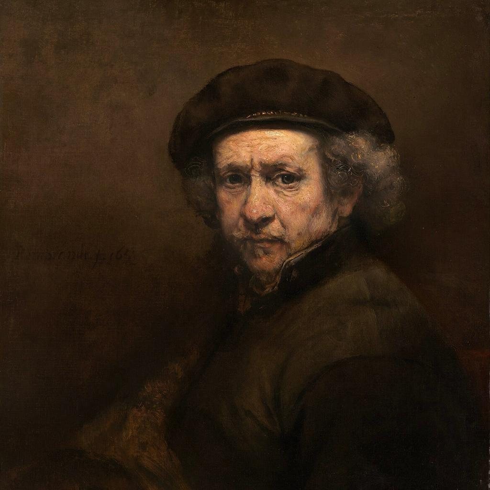
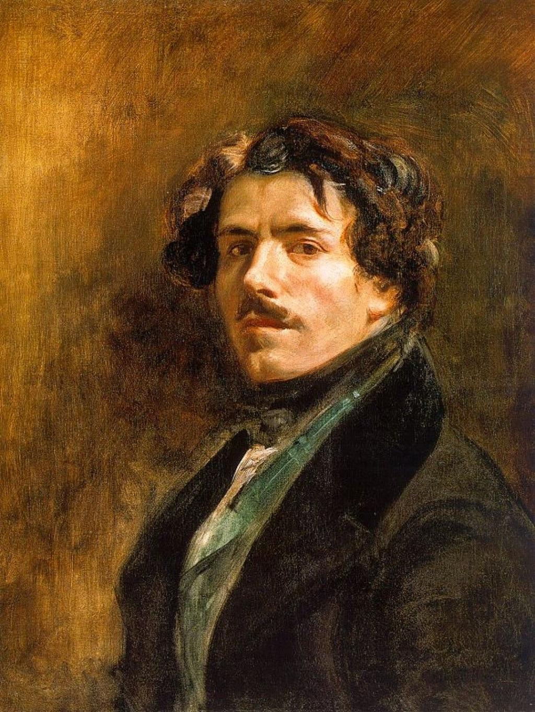

Leonardo da Vinci

was an Italian artist, scientist, and inventor. He was one of the greatest figures of the Renaissance and is famous for his realistic paintings and innovative techniques.
View His Artworks
was an Italian artist, scientist, and inventor. He was one of the greatest figures of the Renaissance and is famous for his realistic paintings and innovative techniques.
View His Artworks
was a famous Dutch painter and one of the greatest artists in European history. He was known for his realistic portraits, dramatic use of light and shadow, and emotional paintings.
View His Artworks
was a famous French painter and one of the leading artists of the Romantic movement. He was known for his dramatic scenes, strong colors, and expressive style.
View His Artworks